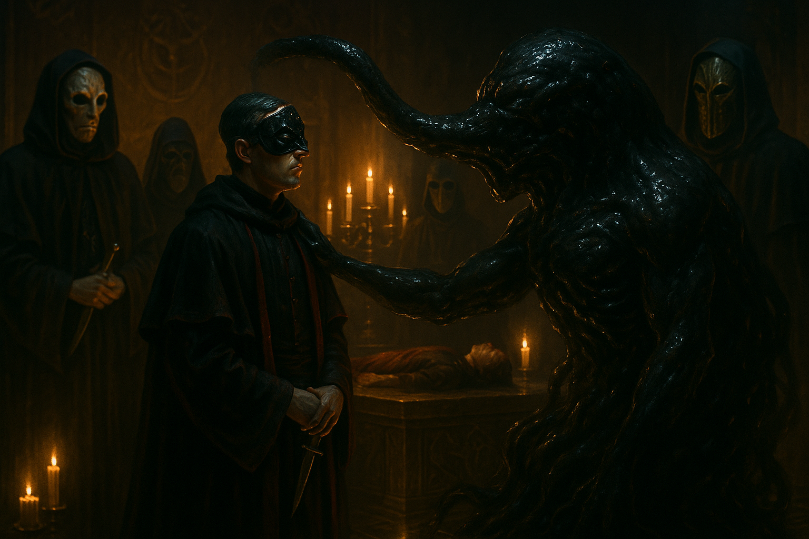

Formless Spawn
Abilities
- Amorphous form
- Pseudopod attacks
- Squeeze through narrow spaces
- Regeneration
Weaknesses
- Fire
- Enchanted weapons
Description
A black, oozing protoplasmic mass that shifts and writhes, forming and reabsorbing limbs, mouths, and eyes in a constant state of flux. It fills whatever space it occupies like a living liquid, squeezing through gaps and reshaping itself to grasp or strike. An amorphous, protoplasmic Mythos entity summoned during the secret ritual at the Goupil Masquerade in Lyon, rising through an aperture in the floor of a hidden chamber beneath Maison_du_Corbeau.
SAN Loss: 1/1D10
For full mechanical stats, see Malleus Monstrorum (Chaosium, CoC 7e) under “Formless Spawn of Tsathoggua.”
Abilities
- Amorphous form: Can reshape itself at will, forming pseudopods, tendrils, temporary mouths, and eyes
- Pseudopod attacks: Strikes with formed appendages
- Squeeze through narrow spaces: Flows through gaps like a living liquid
- Regeneration: Recovers from physical damage rapidly
Weaknesses
- Fire: Vulnerable to flame
- Enchanted weapons: Can be harmed by magically enhanced attacks
Encounters
Chapter 2 — Goupil Masquerade
The investigators attended a masquerade soirée at Maison_du_Corbeau, hosted by Lucien_Goupil but orchestrated by Mathilde_Savarin. Behind the social facade, a secret ritual took place in a hidden chamber. The Formless Spawn rose through an aperture in the floor. A child was sacrificed with a tuning-fork blade in the same ritual. The investigators witnessed everything and did not intervene.
This was the party’s first direct encounter with the Choir’s supernatural horror — the moment the campaign’s threat became viscerally real.
Appearances
Relationships
- Appeared at Goupil Masquerade — Summoned through an aperture in the floor during the secret ritual
- Summoned by Mathilde Savarin — Savarin orchestrated the ritual that summoned the creature